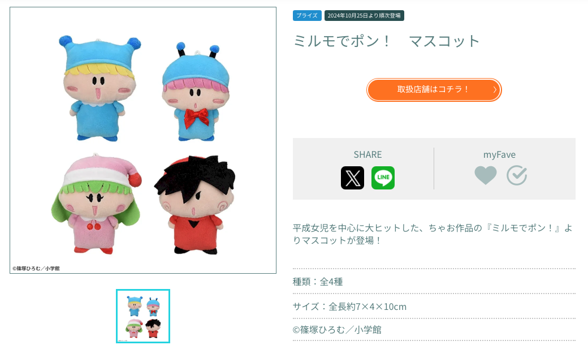
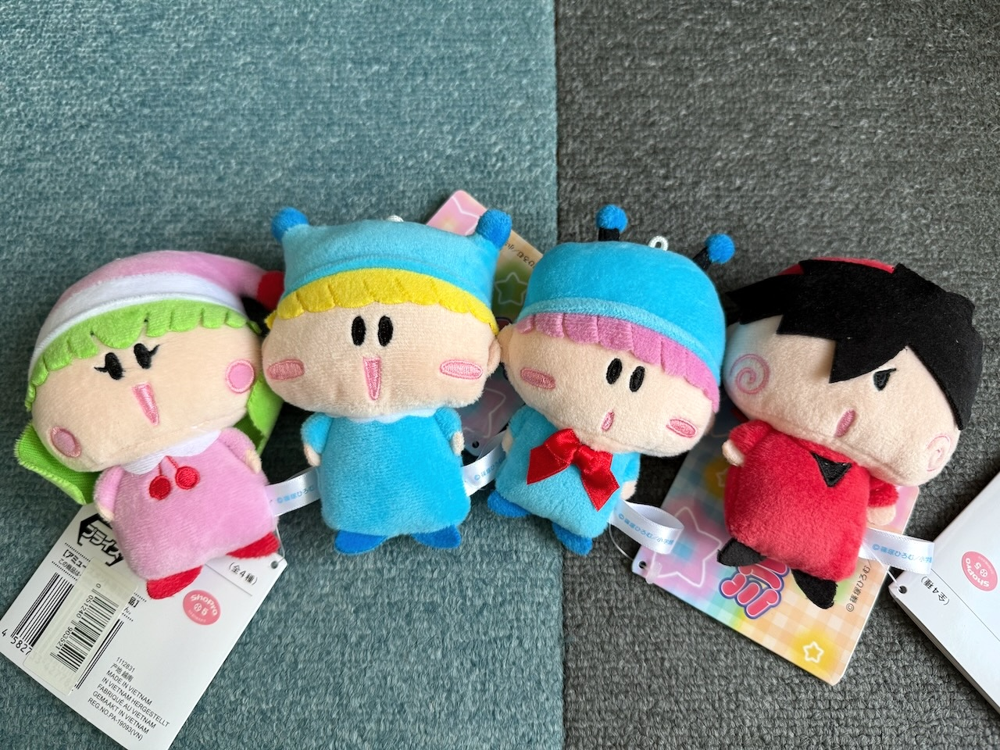
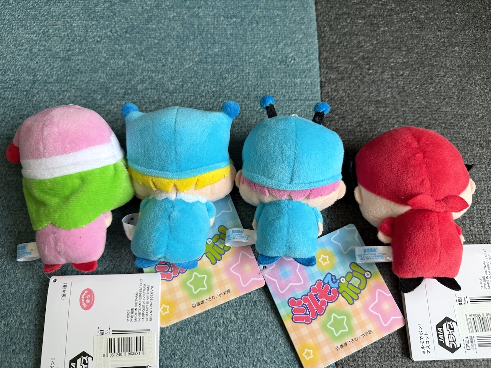
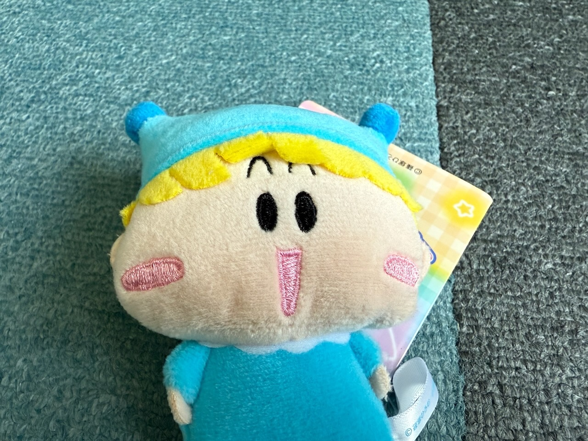
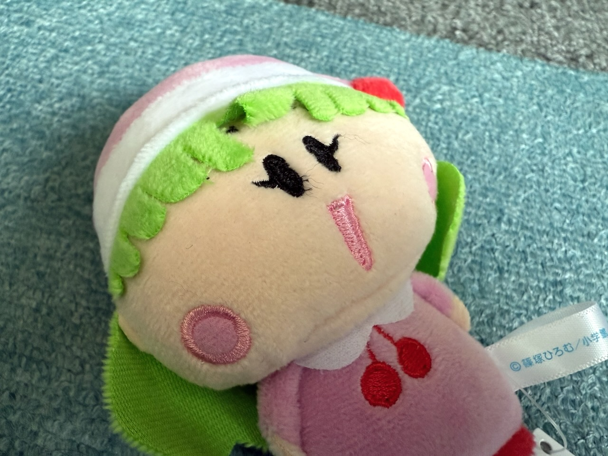
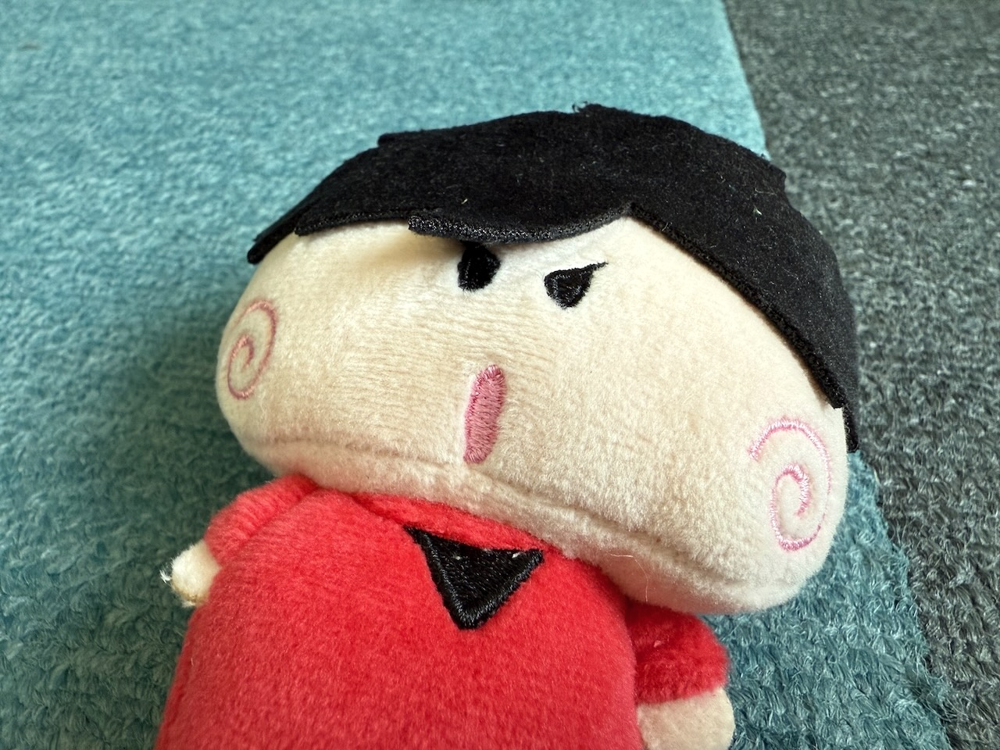

以前こちらの記事で紹介しました、「ミルモでポン！ マスコット 全４種（１０月２５日より順次登場）」を私もゲットしましたので紹介したいと思います。
セガプライズのミルモグッズシリーズで一番最後に発売されたこのマスコット、当初は写真なしで発表されたこともあり、ミルモ界隈の間では謎のマスコットと噂されていました。
実際は通常のぬいぐるみよりもさらに小ぶりにしたぬいぐるみでしょーか。
マグカップに入れてみたり、持ち歩いて写真撮影の被写体に使ったりするといいかも！？
記録も兼ねて、セガプライズの公式サイトの画像を引用します。
それではいつものように、我が家のマスコットたちを紹介します。

サイズは全長約10cmなので、このマスコットたちが妖精の１／１サイズですね。

さっそく４人を並べてみました！
妖精ごとに表情が違うのも良いですね！

後ろ姿です。
足がぴらぴらのフェルトなので、自立することはなさそうです(^◇^;)

ミルモの髪の毛の中に眉毛が隠されていました〜。
（アニメ放送時のぬいぐるみは髪の上に眉毛が描かれていました）

ちょっと見づらいですが、リルムの髪の中に眉毛が隠されていました。
いや〜ん、見ないでほしいでございますわ〜っというリルムの声が聞こえそう。。

ヤシチの前髪をめくると、右目もちゃんと描かれていました。
２０２４年のグッズ紹介記事はこれで以上となります。
２０２４年は本当にたくさんのグッズが発売されて、記事にまとめるのが追いつかないほどでした（今もいくつか記事にできていないものがあります^^;）
２０２５年もまたたくさんのミルモグッズが発売されて、ミルモでたくさん盛り上がることを期待したいですね！
それではみなさん、良いお年を！
【プライズ】
— セガプラザ公式 (@seganewsnavi) October 23, 2024
平成女児を中心に大ヒットした「ちゃお」の『ミルモでポン！』から、マスコットが10月25日より順次登場！
▼取扱店舗やオンクレの検索はこちらhttps://t.co/rmLnGMAGfA#ミルモでポン #セガプライズ pic.twitter.com/gLam7XB9ua
(2024/12/30)